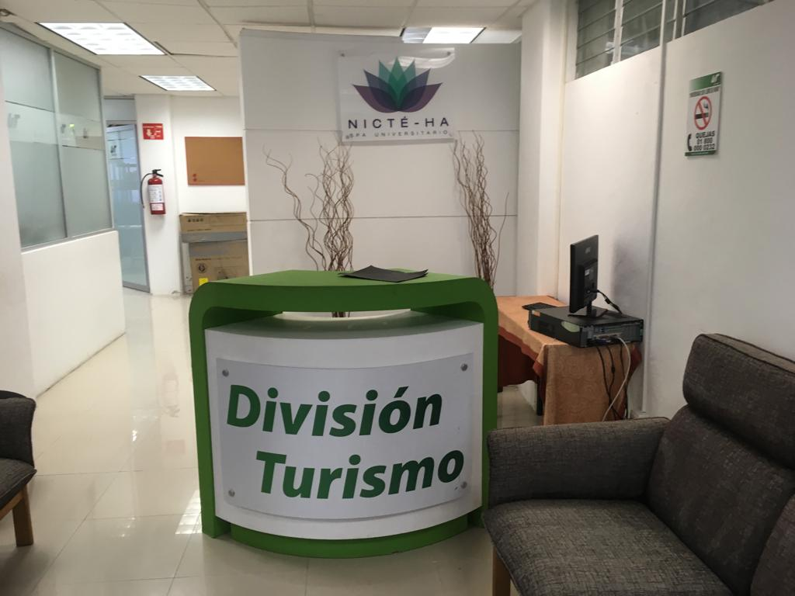

Integrar tratamientos y terapias específicas de spa, a través de la valoración inicial, la planecación, ejecución y evaluación de técnicas de masoterapia, hidrotermoterapia, electroterapia y cosmetología integral para el cuidado de la salud, bienestar y belleza del usuario spa, así como la mejora de su calidad de vida.
Más detalles